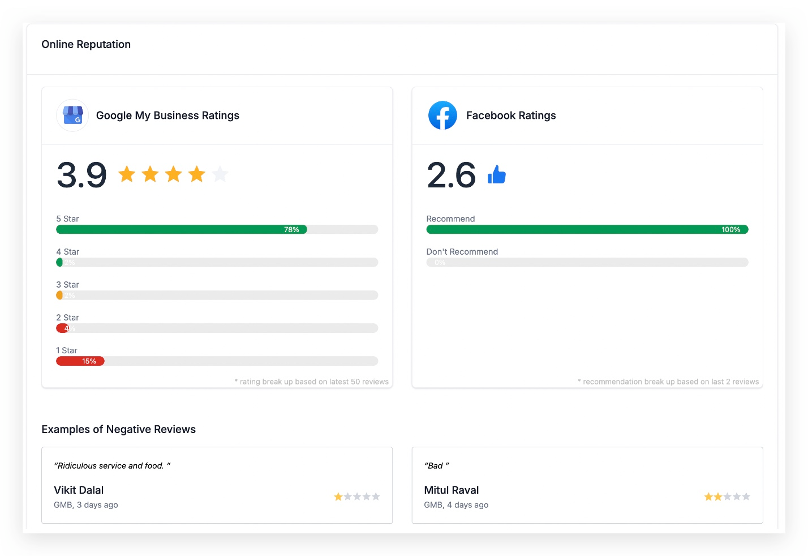
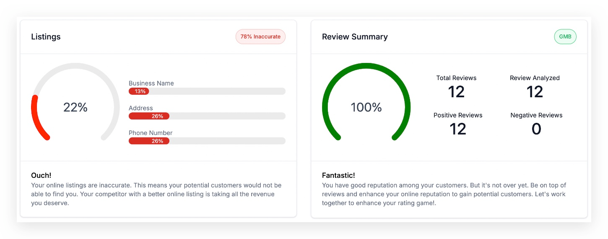
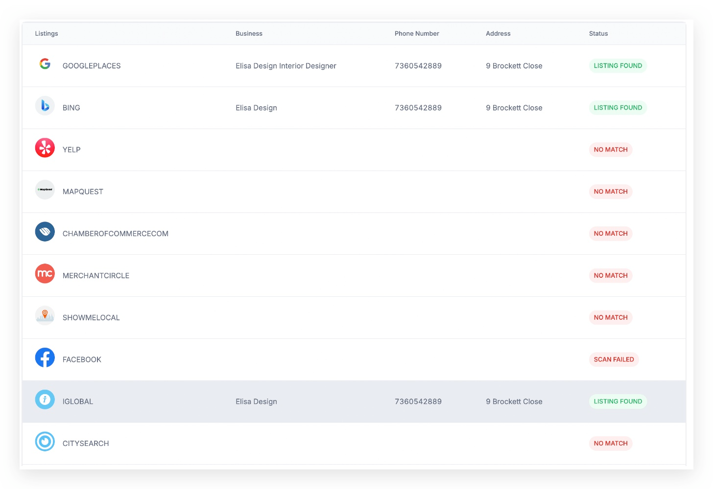
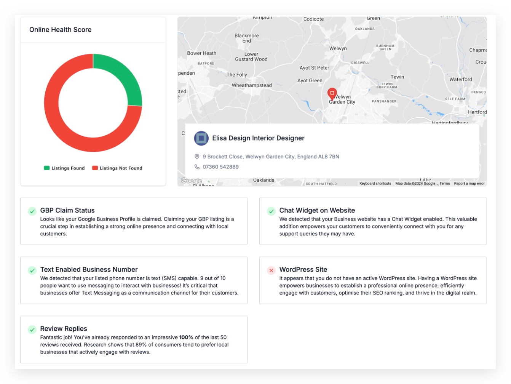
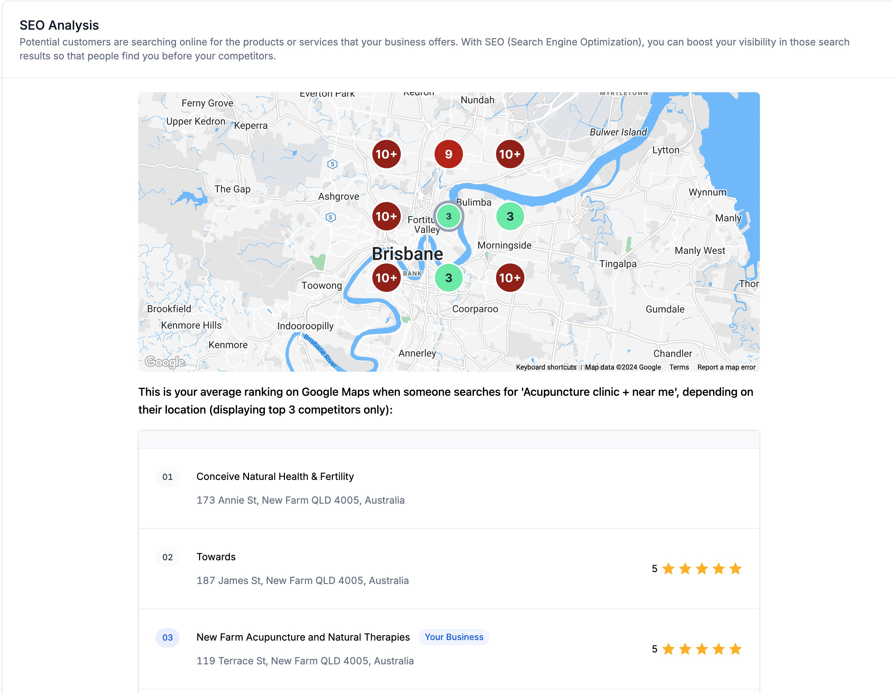
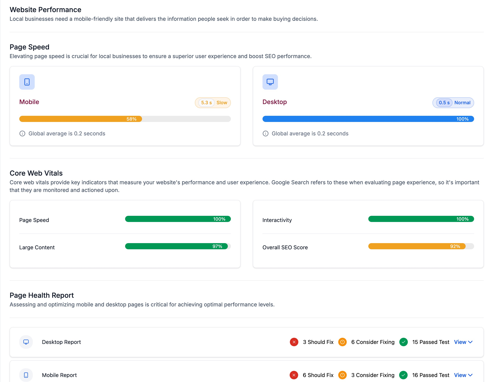

This tool analyzes the strength of your prospects' online presence in terms of their Listings and Reviews. The Report also clearly showcases the gaps in their online marketing strategies.
TABLE OF CONTENTS
- Business Reviews Analysis:
- Business Listings Overview:
- Business Critical Information Evaluation:
- Easy Search Functionality and unlimited report:
- SEO Analysis:
- Website Performance Insights:
Business Reviews Analysis:
- This section analyses and presents insights into the Facebook and Google Business Profile (GBP) reviews of the prospect's business. It provides an overview of customer sentiment and reputation across these platforms.

Business Listings Overview:
- The Business Listings section offers a comprehensive view of the prospect's visibility across popular listings and directories. It highlights where the business is discoverable by end users, aiding in assessing online presence.

Detailed Listing Details Breakdown
Business Critical Information Evaluation:
- This part of the report assesses critical business information that impacts marketing strategies:
- GBP Claim Status: Indicates whether the Google Business Profile is claimed by the prospect, affecting online credibility and visibility.
- Review Reply Rate: Analyses how actively the prospect engages with customer reviews, reflecting customer relationship management.
- Presence of Business Website: Identifies if Prospect has a Business website indicating its presence in the digital realm
- Presence of Chat Widget: Identifies if the prospect's website features a chat widget, indicating readiness for customer engagement.
- Text-Enabled Business Number: Highlights whether the business utilises a text-enabled phone number, facilitating direct communication with customers.

Easy Search Functionality and unlimited report:
- The Easy Search feature simplifies the prospecting process by centralising prospect discovery, management, and outreach. Users can efficiently find and engage with potential clients using this streamlined tool.
SEO Analysis:
- The SEO Analysis section provides a detailed overview of the prospect's search engine optimisation (SEO) performance. This includes a heat map comparison of business rankings in neighbouring locations compared to competitors. By visually representing SEO effectiveness through heat maps, users can identify areas of strength and opportunities for improvement to enhance local search visibility.

Website Performance Insights:
- Gain detailed insights into the website's performance metrics, including:
- Website Speed: Evaluate how quickly the website loads, which is critical for user experience and SEO.
- Core Web Vitals: Assess core web vital metrics such as Largest Contentful Paint (LCP), Cumulative Layout Shift (CLS), which impact user experience and search engine rankings.
- Mobile vs. Desktop Health Report: Compare the website's performance and usability on mobile devices versus desktops, identifying optimisation needs for different platforms.
